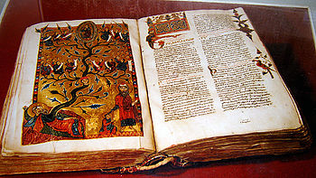

СОДЕРЖАНИЕ
Раздел 1 - Этимология книг
Раздел 2 - История развития книг
Раздел 3 - Современные технологии и книги
Статья взята с ресурса Wikipedia
Устная передача — самый древний способ передачи знаний в истории человечества. После изобретения древними цивилизациями систем записи люди начали использовать для письма почти всё, на чём можно писать — глиняные таблички, кору дерева, листы металла и т. п.
ТабличкиТабличку можно определить как физически прочный, надёжный носитель письменной информации, относительно удобный в повседневном использовании и транспортировке. Пишущим средством в этом случае, как правило, выступало стило. Можно выделить два основных типа табличек: глиняные (например, у населения долины между Тигром и Евфратом), которые часто использовались для письма клинописью[8], и восковые. Последние представляли собой дощечки, покрытые слоем воска, в то время как глиняные полностью состояли из глины и после нанесения надписей часто обжигались для придания им дополнительной прочности. После этой процедуры, соответственно, изменить текст было уже невозможно; напротив, записи на восковых табличках можно было стереть и использовать носитель повторно. В Древнем Риме дощечки часто скрепляли друг с другом. Известно, что существовали «диптихи», «триптихи» и «полиптихи» (соответственно две, три и много дощечек)[9], образуя тем самым своеобразный прототип современной книги — кодекс[10].
СвиткиВ Древнем Египте для записи со времён Первой Династии использовался папирус (вид бумаги, сделанной из стеблей одноимённого растения). Древнейшими находками этого рода являются папирусы, в частности бухгалтерские документы, из заупокойного храма царя Нефериркара Какаи Пятой Династии, найденные в Абусире и датируемые началом 24 — концом 23 вв. до н. э.[11] Отдельные листы папируса, для удобства хранения, склеивались в свитки. Эта традиция получила широкое распространение в эллинском и римском мире, хотя есть свидетельства, что использовались также древесная кора[K 2] и другие материалы. Технологию изготовления папируса описал в «Естественной истории» (Книга XIII, часть XXIII[12]) Плиний Старший[13]. Согласно Геродоту («История», книга 5, часть 58), финикийцы принесли письменность и папирус в Грецию около X или IX века до н. э. Греческим словом для папируса как материала для записей стало «библион», а для книги — «библос»[K 3], которое произошло от названия финикийского портового города Библ, через который папирус экспортировался в Грецию[14].
Чернила с поверхности папируса легко смывались, и лист мог использоваться вторично для новых записей. Длинная полоса (по-гречески «хартия») склеенных листов папируса (обычно около 20) исписывалась с одной стороны. Папирусная полоса наматывалась на валик с ручками. При чтении надо было одной рукой держать валик, а другой разматывать свиток[15].
КодексыВ V веке Исидор Севильский разъяснял различия между книгой, свитком и кодексом в соответствии с существовавшими тогда представлениями следующим образом: кодекс составлен из множества книг, книга — из одного свитка. В современном понимании кодекс можно назвать первым носителем информации, который характеризуется заметным сходством с книгой: страницы равнозначного размера тем или иным образом скреплены с одной стороны и заключены в обложку, изготовленную из некоторого достаточно прочного материала. Несмотря на свои положительные аспекты, кодексы не получили широкого распространения в эпоху античности и приобрели популярность уже в III—IV веках, в христианском обществе, когда для записей стал использоваться пергамент, который, в отличие от папируса, не ломался, когда его сгибали[16], его можно было резать. Преимущества такого формата состояли в его экономичности (можно было использовать обе стороны носителя письменной информации), портативности и удобстве поиска сведений. Кроме того, пергамент — материал многократного применения: с него легко удаляется краска. Распространена была записная книжка из четырёх листов пергамента, согнутых и прошитых посередине, так получалось 16 страниц. Такая книжка по-гречески называлась «тетрада» («четвёрка»), современные книжные блоки собираются из 16- и 32-страничных тетрадей[9].
Рукописные книги (манускрипты) создавались в мастерских-скрипториях. В столице Византии Константинополе скрипторий (известно, что он работал уже в 356 году) основал Констанций II, при котором также в столице появилась публичная библиотека (в 475 году в ней насчитывалось 120 000 книг). Скриптории были также при монастырях, крупнейший из них работал в Студийском монастыре. Для того, чтобы строки выходили ровными, пергамен разлиновывался пластинкой из мягкого свинца, позднее для этой цели использовался грифель. Текст каллиграфы наносили чернилами с помощью тростникового пера (каляма), деревянной палочки, позднее использовались также птичьи перья[18][19]. Со временем листы некоторых рукописей стали окрашивать в разные цвета, текст выполнялся цветными чернилами. Начало нового абзаца писалось красными чернилами (их делали из киновари или сурика). Каллиграфов, писавших начала абзацев, называли рубрикаторами (от латинского «рубер» — красный)[20]. Появилось мягкое и округлое унциальное письмо, удобное для исполнения на пергамене пером, расцвет его приходится на IV век[21]. Так как пергамен был очень дорог, его часто использовали повторно — тексты смывали специальными составами, скоблили пемзой и писали новые. Рукописи, выполненные на пергамене повторного применения, называются палимпсестами. Бо́льшей частью таким образом в средние века уничтожались античные книги, однако известны и обратные случаи — в эпоху высокого средневековья уже тексты нтичных авторов писались поверх произведений отцов церкви[22][K 4][20].
Падение Римской империи в V веке уменьшило её культурное влияние на остальной мир. В Западной Римской империи традиции письма латынью хранили в монастырях, так как сначала Кассиодор в монастыре Вивария, а позже Бенедикт Нурсийский в VI веке подчеркнули важность переписывания текстов. Это очень повлияло на значимость книг в период Средневековья, хотя тогда книги, в основном, читало духовенство. До изобретения и широкого распространения печатного станка практически все книги копировались от руки, ввиду чего рукописные издания были довольно редки и дороги. Небольшие монастыри обыкновенно имели несколько десятков книг, в распоряжении более крупных насчитывалось до нескольких сотен; к IX веку крупной считалась коллекция в 500 книг, и даже к концу периода Средневековья папская библиотека в Авиньоне и собрание книг Сорбонны насчитывали лишь около двух тысяч изданий[24].
Ксилография и инкунабулыВ начале XIV века в Западной Европе появилась ксилография (она была разработана задолго до этого на Востоке (один из самых ранних образцов датируется VIII веком), издавна ксилографические книги печатались в Корее)[25]. В ксилографии матрица с изображением страницы вырезалась из куска древесины. Её можно было окунуть в чернила и использовать, чтобы сделать несколько копий страницы. Самые ранние печатные формы с текстом использовались для производства набивных тканей[26]. Книги, так же, как набойку, игральные карты и религиозные изображения, начали производить ксилографией. Поначалу бумажные листы печатались лишь с одной стороны, а их пустые стороны склеивались. Печать с обеих сторон листа стала возможна после изобретения станка. Создание книги было кропотливым процессом, так как для каждой страницы нужно было делать свою резьбу (на что уходило около месяца). Кроме того, дерево было недолговечно — оно легко стиралось и трескалось, а после того, как деревянные формы были использованы для печати, их выбрасывали[27].
Печатные книги, отдельные листы и иллюстрации, созданные в Европе по 31 декабря 1500 года, известны как инкунабулы (лат. incunabula — «колыбель»)[28]. С широким распространением бумаги, известной Европе с XII века[29], удешевилось книгопечатание. Первые книги, в которых использовалась бумага, содержали также и листы пергамента: обыкновенно бумажная тетрадь из 4 листов оборачивалась листом пергамента[30].
Наборная формаВоспроизведение текста оттисками отдельных штампов было известно с давних времён (самый ранний известный пример — Фестский диск). В монастыре Прюфенинг[de] хранится запись на латинском языке об основании церкви, оттиснутая отдельными штампами в 1119 году[31]. Изобретателем печати с наборной печатной формы считается китайский кузнец Би Шэн (990—1051). способ печати сотен и тысяч оттисков с одной формы, набранной литерами из обожжённой глины, был описан учёным Шэнь Ко в «Записках о ручье снов»[32]. Однако в связи с тем, что китайская письменность идеографическая, печать с наборной формы в Китае не получила широкого распространения, так как наборные кассы со всеми необходимыми литерами достигали огромных размеров[33].
ГутенбергВ XV веке Иоганн Гутенберг первым в Европе использовал для печати типографский станок с металлическими подвижными литерами, это позволяло получить большое количество оттисков. Механизмы, подобные станку Гутенберга, издавна применялись в виноделии и при производстве бумаги. Также Гутенберг начал изготавливать литеры с помощью словолитной формы, значительно упростив процесс[34]. Книги стали сравнительно доступными, хотя для большинства всё ещё весьма дорогими. Закрепление текста в сотнях или тысячах идентичных экземпляров привело к появлению устоявшихся редакций произведений, свободных от ошибок и искажений, неизбежных при их переписывании[28].
| Перейти к разделу 1 | Вернуться в начало раздела 2 | Перейти к разделу 3 |